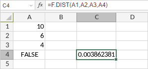

F.DIST funkcija
F.DIST funkcija je jedna od statističkih funkcija. Koristi se za vraćanje F raspodele verovatnoće. Ovu funkciju možete koristiti da biste odredili da li dva skupa podataka imaju različite stepene raznolikosti.
Sintaksa
F.DIST(x, deg_freedom1, deg_freedom2, cumulative)
F.DIST funkcija ima sledeće argumente:
| Argument | Opis |
|---|---|
| x | Vrednost na kojoj funkcija treba da se izračuna. Numerička vrednost veća od 0. |
| deg_freedom1 | Stepeni slobode brojnika, numerička vrednost veća od 0. |
| deg_freedom2 | Stepeni slobode imenioca, numerička vrednost veća od 0. |
| cumulative | Logička vrednost (TRUE ili FALSE) koja određuje oblik funkcije. Ako je cumulative TRUE, funkcija vraća kumulativnu raspodelu. Ako je FALSE, funkcija vraća funkciju gustine verovatnoće. |
Napomene
Kako primeniti F.DIST funkciju.
Primeri
Slika ispod prikazuje rezultat koji vraća F.DIST funkcija.
